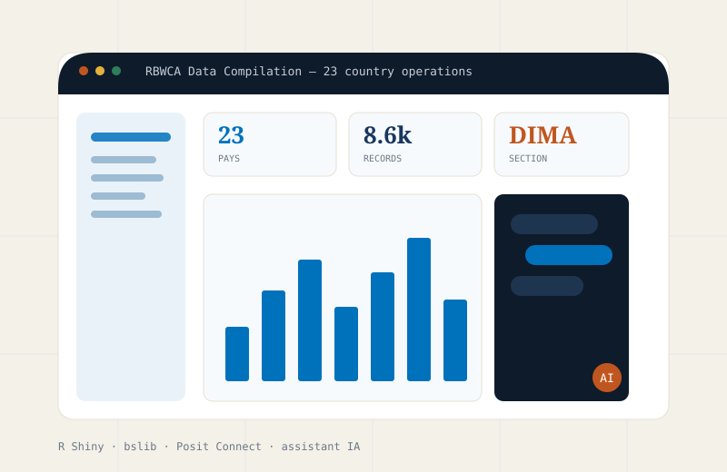

Plateforme · En production
Plateforme RBWCA Data Compilation
Application R Shiny (bslib) déployée sur Posit Connect, qui centralise les données opérationnelles de 23 pays d'Afrique de l'Ouest et Centrale. Un assistant IA intégré permet d'interroger les données en langage naturel.
Impact
Repérée par trois Senior Managers d'UNHCR HQ Genève, qui ont proposé d'en faire un projet régional officiel. Migration en cours vers SQL Server + ActivityInfo.
R ShinybslibPosit ConnectSQL ServerActivityInfoOpenAI API